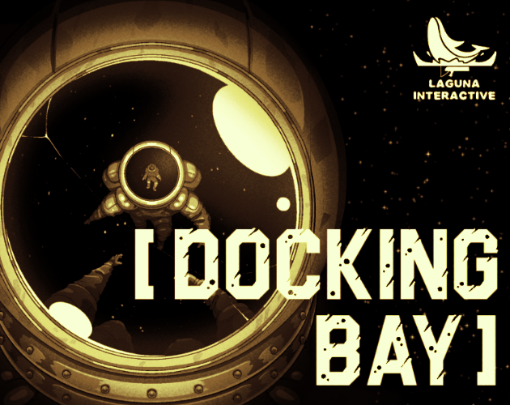
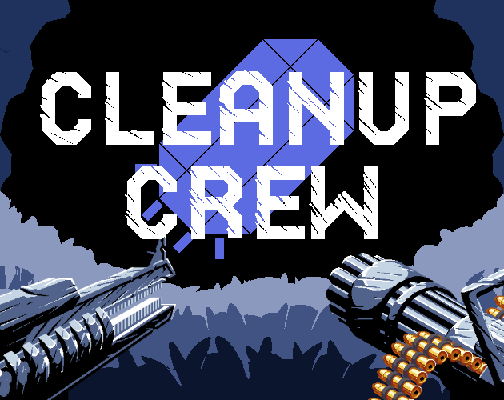
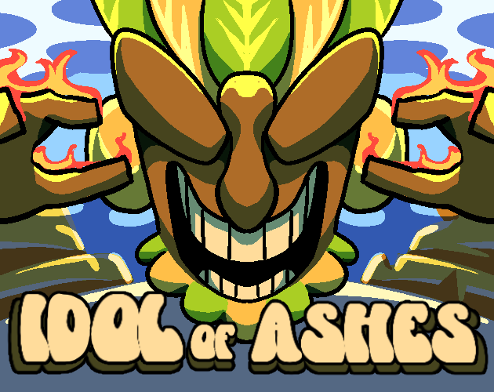
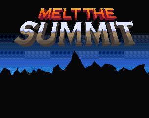
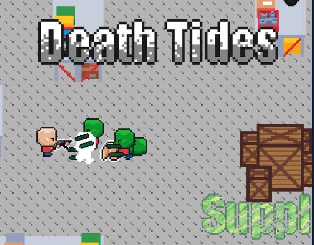
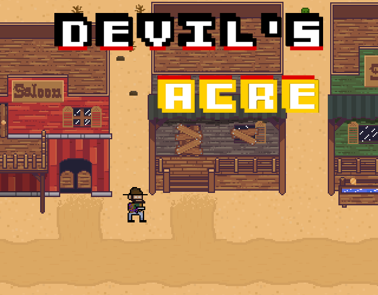
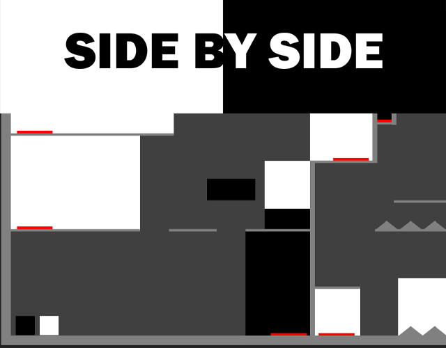
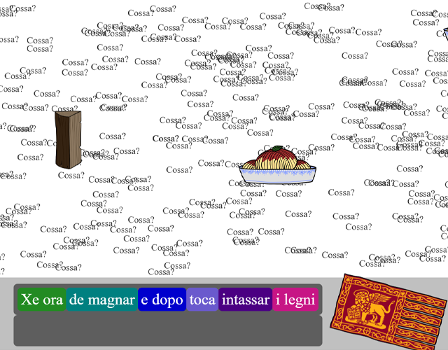
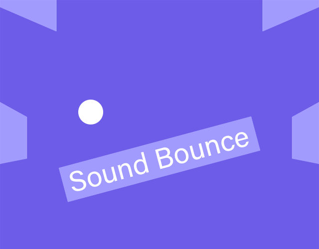

Gameplay Programming & Technical Art
Utilizing coding in order to create an interactive and engaging gameplay experience.
Utilizing coding in order to create an interactive and engaging gameplay experience.
Made with Unity and C#, playable on Itch.io through WebGL or downloadable

An infection outbreak has ravaged through your research team. Identify the infected and terminate them!
Team: Laguna Interactive
Play Team Page Game Jam- Data randomizing with scriptable objects to randomly assign character order, infection, & infection anomalies
- Loading data onto the UI of specific in-game monitors
- UI architecture of in-game monitors and its gameplay features based on data values
- Player moving & zooming using point-lerping and raycasting
- Gameplay architecture, day system, power system, & accept/reject pod state checks and sequencing
- Sound system for anomalies monitoring and heart rate monitor (bpm data accurate)
- Gameplay deisgn, level design, and narrative

Return to Earth as you fight to survive and find resources to become stronger to eliminate the ongoing threat!
Team: Laguna Interactive
Play Team Page Game Jam- Visualizing 2D character sprites into 3D space utilizing sprite-swapping based on the angle between character look direction and player look direction
- Gun sprite animations based on player movement (ie: jump, dash, walk, & etc)
- Wave system & objective wave system (Enemy spawn sequencing)
- Enemy navigation sequencing
- Player energy, double jump and dashing movement
- Tutorial system, checking for inputs to proceed
- Gameplay deisgn and narrative

Scavenge for tribute as you piece together the real reason why you are here!
Team: Laguna Interactive
Play Team Page Game Jam- Randomize item spawning based on an array of set spawn points
- Interaction and pick up system utilizing raycasting
- 3D character idle animation
- Sound effect and music stystem
- Player movement system
- Gameplay deisgn, level design, and narrative

Follow the path of revenge as you embark on an investigative journey up the nearby alpine mountains!
Play Devlog Show Page- Attack systems for player sword (Detatching knockback, attaching damage, heat system, ice cube system), all enemys and boss (Projectiles and melees)
- All sprites, animations, & UI art
- Lives/checkpoint system
- Sound effect system, music system, & all music tracks
- Enemy navigation state checks
- Ice sliding puzzle system
- Shop and NPC system
- Gameplay deisgn, level design, and narrative

Loot nearby supply drops to repair your getaway boat. Clear waves of zombies and survivors to save yourself!
Team Members: Ben Beary
Play Game Jam- Player health system, energy system, & boat crafting system
- Player UI health, ammo, & energy
- Vehicle sprites (Cars & boats), item icon sprites, warehouse flooring sprites & shelving units sprites
- Loot system using scriptable objects
- Gameplay deisgn, level design, and narrative

Join the adventure of a lone wanderer in a search to slay the demon who cursed him!
Team Members: Ben Beary, Alexander Price, & Daniel Perez-Gomez
Play Devlog- Player ability system, rouge-like leveling system, player attack system, event system, & player shooting arm system
- Enemy navigation, projectiles, boss system, boss health states, & boss attack sequencing
- Wave system, key system, & shop system
- Gameplay deisgn, level design, and narrative
Made into a HTML webpage with gameplay using CSS and Javascript.

I created a webpage using HTML, CSS, and Javascript (with the p5.play, buttons.js, scenemanager.js and p5.sound.js libraries) in order to create an interactive two player puzzle/obstacle course game. In addition to the complicated, timed, and intricate level design, I mapped the player controls to seemingly arbitrary inputs.
Play- Utilizing p5.play, buttons.js, scenemanager.js and p5.sound.js libraries to build the game architecture
- Use p5.play movement system to create a platforming maze
- Use collisions to handle in game buttons/platforms'
- Color coordination to guide player strategy/roles
- Strategically changed input controls to cause players to intertwine their hands on a shared keyboard
- Use p5.sound.js to handle sound importing
- Use Scenemanager to create menus and scenes
- Gameplay deisgn and level design

I created a website using HTML CSS and Javascript to tell the story of my linguistic background in an interactive game with 3 levels/pages. I strategically break the 3 languages into their own levels/pages in order to highlight them individually and to increase the difficulty over time.
Play- Gamify CSS hovering logic for the searching aspect of the game and image animations
- Use Javascript to randomize spawning of filler/distraction words, searchable elements, & image blockers in a certain area
- Utilizing Javascript's click logic and if statements to sequence order of the memeory aspect of the game
- Gameplay deisgn, level design, and narrative

Play a pinball game that inverses the mood/feel/aesthetic of normal pinball machines. Cool colors, calming sounds, and relaxing.
Play- Using Sound Library, Scenemanager, p5.play, and p5buttons libraries to create the game architecture
- Use p5.play to build the ball bounce and flipper
- Use Javascript to handle score system, sound effect system, and gameplay sequencing
- Use buttons.js to handle mouse inputed gameplay
- Use Sound Library to handle sound importing
- Use Scenemanager to create menus and scenes
- Gameplay deisgn and level design